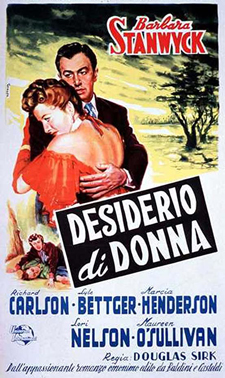
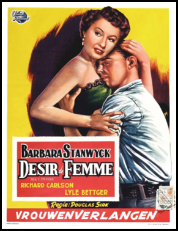
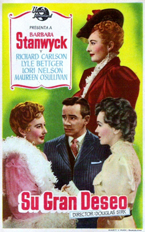

All I Desire
Barbara Stanwyck
Marcia Henderson
Richard Long
Lotte Stein
Thomas Jackson (uncredited)
Henry Blair (uncredited)
SYNOPSIS
In 1910, Naomi Murdoch deserted her small-town family to go on the stage.
Some ten years later, daughter Lily invites Naomi back to see her in the Riverdale high school play. Her arrival sets the whole town abuzz, wakes up old conflicts, and sets off new emotional storms.
Douglas Sirk originally shot a darker, sadder ending, but the producer, Ross Hunter, substituted a happier one.
Hunter said Barbara Stanwyck worked for "little or no salary" and the $460,000 budget included 25% studio overhead. He also said the film "was when he learned how to put the money on screen" as a producer.
Richard Long, who has a horseback-riding scene with Stanwyck in the film, would later play her eldest son in all 122 episodes of the TV western series The Big Valley (1965-9).


